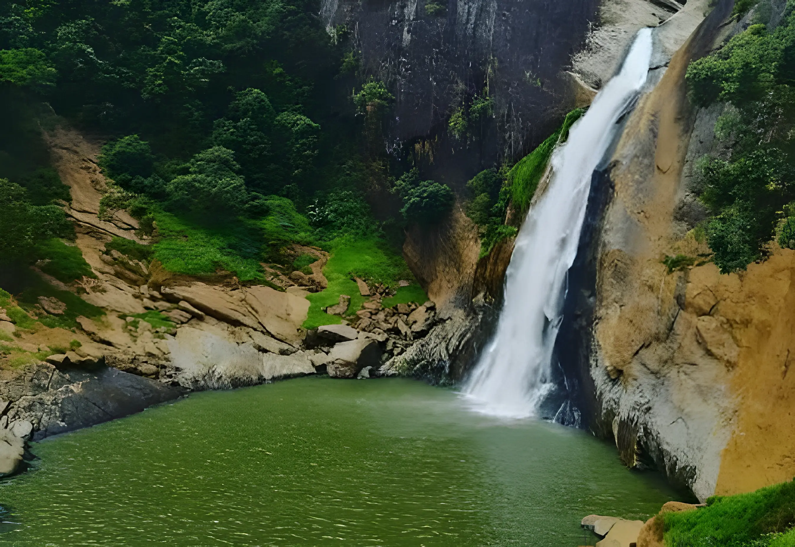
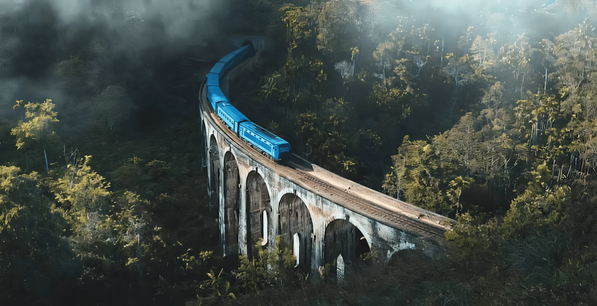
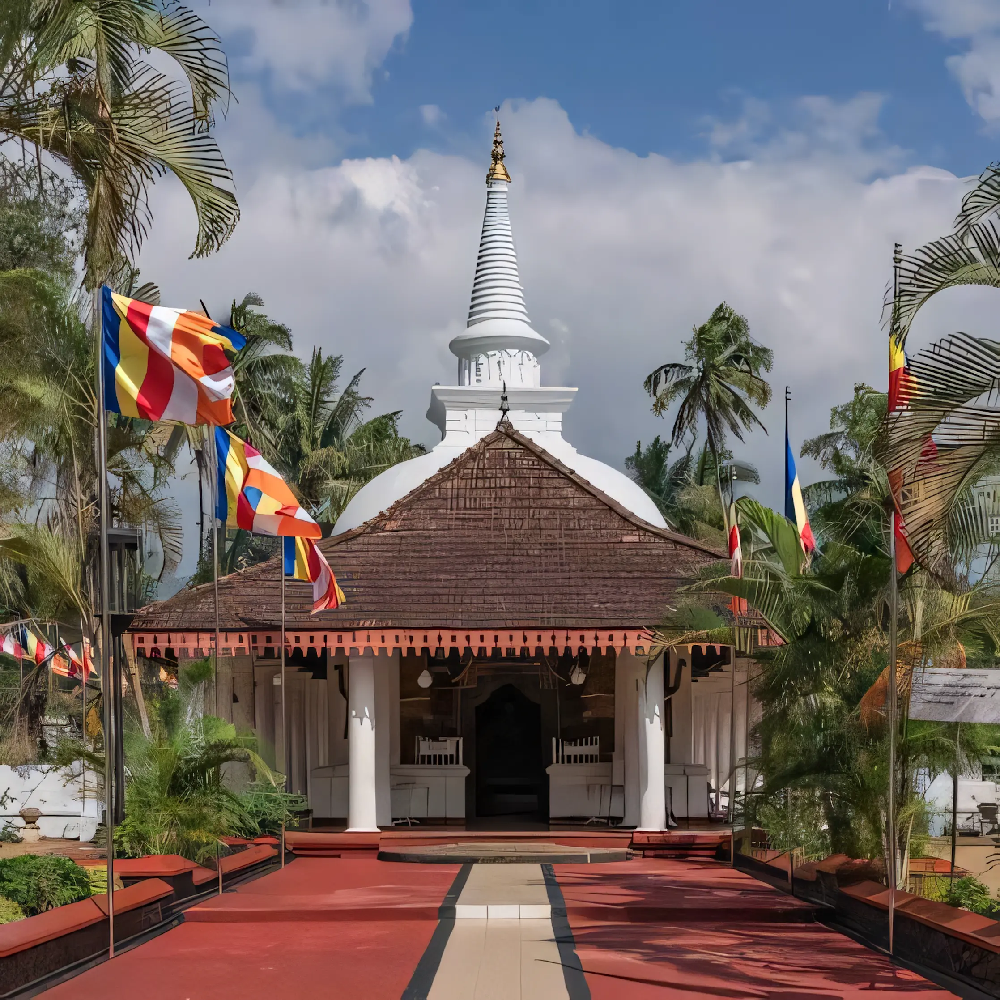
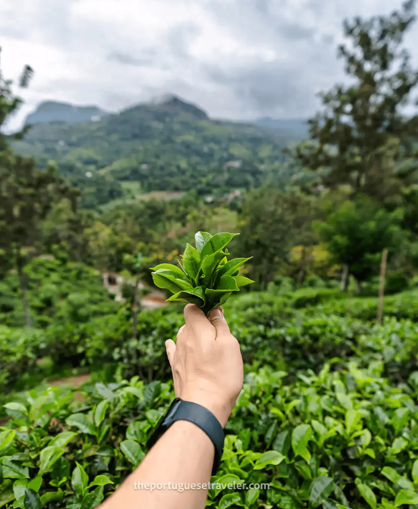
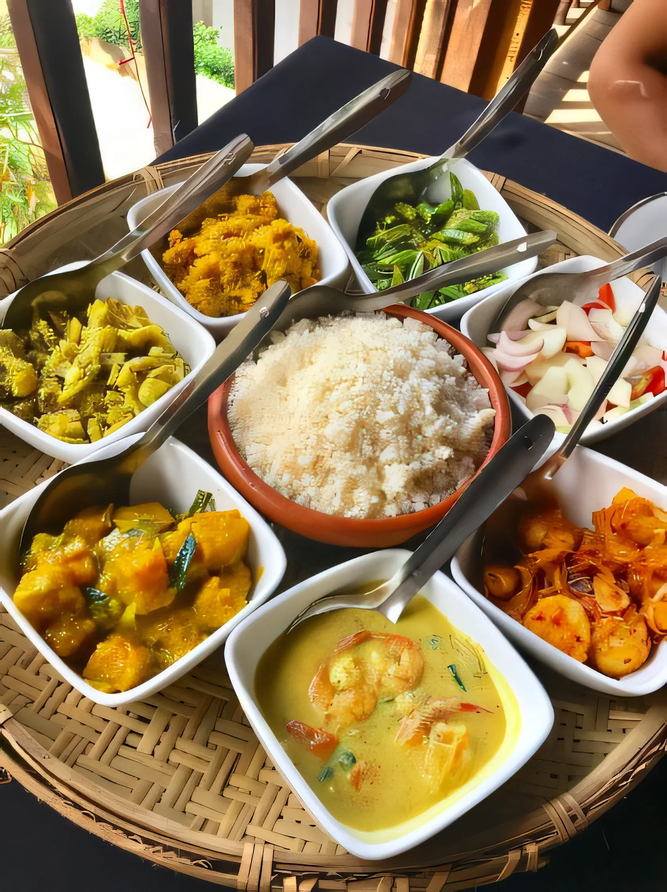
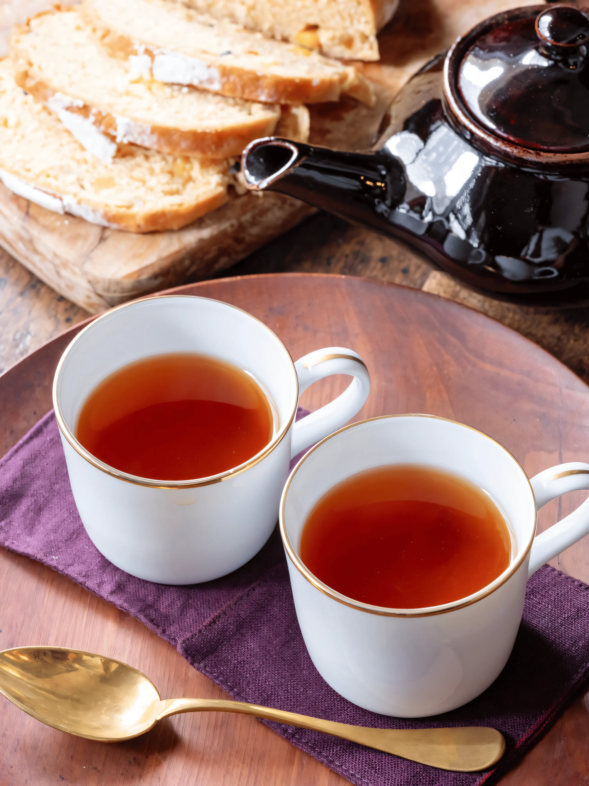
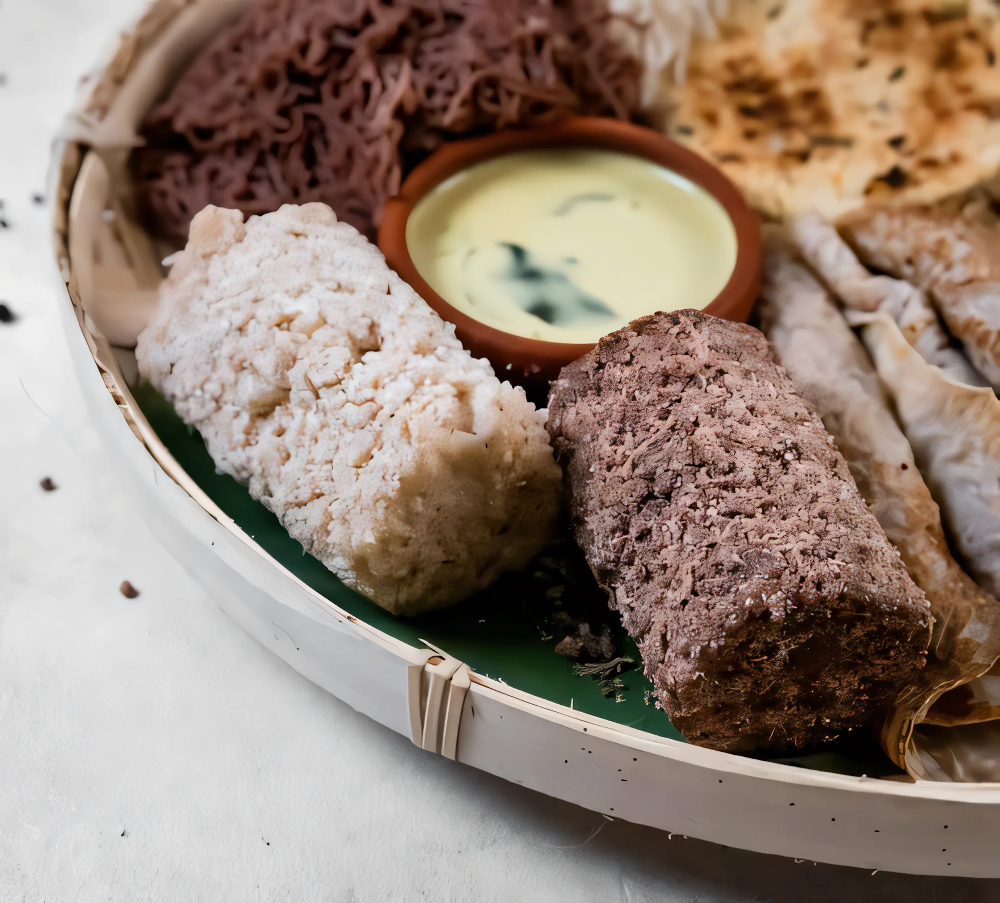
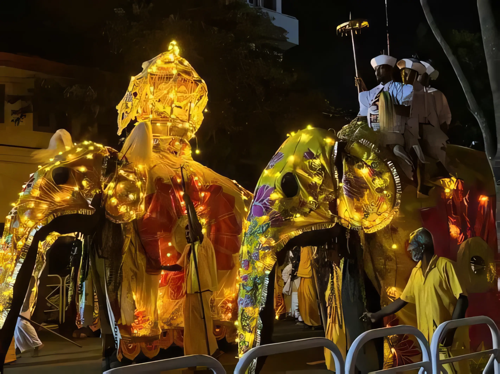
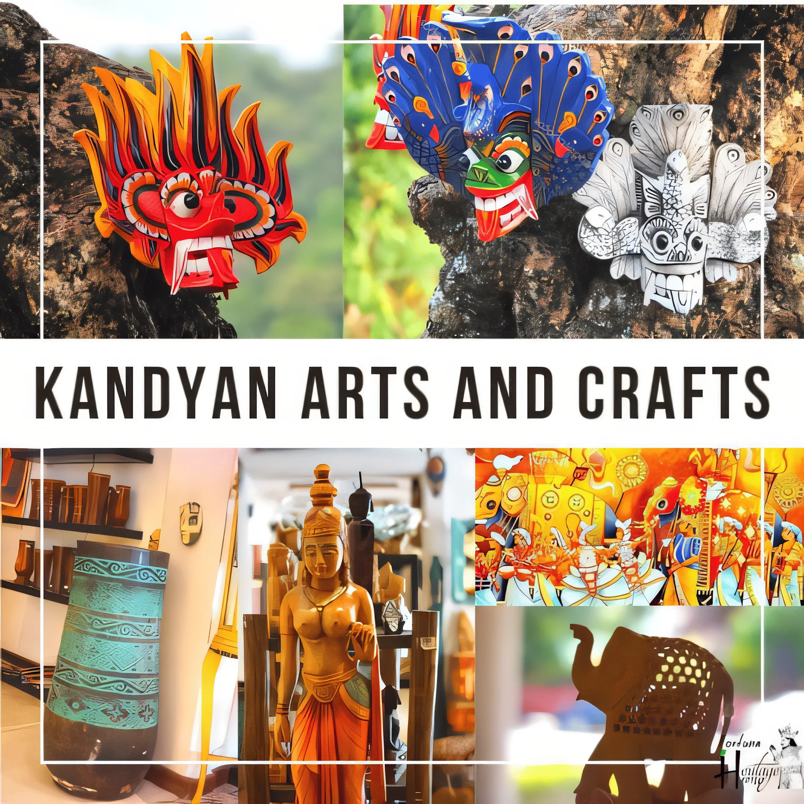

Badulla
District
Where mist clings to tea terraces, waterfalls carve ancient rock,
and every trail leads somewhere worth remembering.
Where the
highlands
breathe.
Badulla is the administrative capital of Uva Province, nestled among the central highlands at roughly 680 metres above sea level. It is one of Sri Lanka's oldest towns — a place where British colonial railways still wind through mountains, where Buddhist temples stand beside Hindu kovils, and where the air carries the faint sweetness of tea.
.webp)

Nature at Every Turn
Dunhinda Falls plunges 64 metres into a misty gorge. The Ella Gap offers one of the island's most photographed panoramas. Knuckles Range foothills and the Namunukula mountain range frame the district in ancient forest. Every road through Badulla is a scenic route.
A Living History
The Muthiyangana Raja Maha Viharaya is among Sri Lanka's most sacred Buddhist temples, believed to have been visited by the Buddha himself. The town's colonial-era clock tower and the Demodara railway loop — where the train passes over its own tracks — are living reminders of a layered past.

Choose where you want to start
Discover
Dunhinda Falls
Sri Lanka's widest waterfall, hidden in a jungle gorge just 5km from Badulla town.
Demodara Loop
A feat of colonial engineering — the train circles under itself through a unique figure-eight rail loop.
Muthiyangana Temple
One of the 16 sacred sites of Sri Lanka, steeped in over 2,500 years of Buddhist devotion.
Attractions
Scroll down through each destination

Dunhinda Falls
Waterfall · NatureDunhinda is Sri Lanka's most celebrated waterfall — not for its height (64m) but for its extraordinary width and the roaring cloud of mist it sends into the surrounding jungle. The name means "milky waters" in Sinhala. A 1.5km forest trail from the entrance winds through dense greenery before the falls come into dramatic view. The pool at the base shimmers even on overcast days.

Demodara Railway Loop
Engineering · HeritageOne of the world's most remarkable pieces of railway engineering. Built by the British in 1921, the Demodara Loop is a spiral section of track where the train passes over itself via a tunnel — descending 30 metres in elevation within a tight mountain radius. The nearby Nine Arch Bridge is an iconic colonial viaduct built entirely from brick and stone, framed by lush tea fields.

Muthiyangana Viharaya
Temple · PilgrimageAmong the 16 holiest Buddhist sites in Sri Lanka, the Muthiyangana Raja Maha Viharaya is believed to have been blessed by the Buddha during his second visit to the island. The complex houses ancient relics, a soaring white dagoba (stupa), and beautifully painted murals. The temple comes alive during the annual Badulla Perahera festival with elephants, drummers, and torchlight processions.

Ella Gap & Namunukula
Panorama · HikingThe Ella Gap is a natural break in the mountain ridge that frames one of Sri Lanka's most breathtaking views — tea fields descending steeply towards the southern coastal plains. Namunukula, meaning "nine peaks," is the dominant mountain of the range at 2,036m and offers challenging trekking through cloud forest. On clear mornings, you can see almost to the coast.

Uva Tea Estates
Plantation · ExperienceUva Province produces some of the world's most distinctive teas — a character shaped by the dry Cachan winds that sweep through the highlands each July and August, concentrating the flavour of the leaf. Several estates around Badulla and Ella welcome visitors for factory tours, tasting sessions, and walks through the geometrically perfect rows of tea bushes managed by skilled pluckers.
Culture
The food, festivals, and customs of Uva

Rice & Curry
Staple Food · Daily MealThe heartbeat of Badulla's food culture. A typical Uva-style rice and curry spread arrives with steamed red rice at the centre, surrounded by a constellation of small bowls: jackfruit curry, dhal, parippu, gotukola sambol, and a fiery green chilli condiment. The curries here lean on locally grown spices — goraka, fenugreek, and pandan — giving them a depth different from coastal Sri Lankan cooking.

Uva Highland Tea
Beverage · Cultural IconUva tea is not just a drink — it is a world-recognised origin. Produced at elevations above 1,200m, the tea has a distinctive bright, brisk character with a subtle menthol finish that comes from the seasonal Cachan winds. Served plain in a small glass with a spoonful of jaggery on the side, a cup of highland tea at a plantation bungalow is one of Badulla's most lasting sensory memories.

Pittu & Kiri Hodhi
Traditional BreakfastA beloved highland breakfast: pittu is steamed cylinders of rice flour and coconut, served with kiri hodhi — a gentle coconut milk gravy — alongside banana and a sharp pol sambol. In the cool morning air of Badulla, this dish is warming and grounding. You will find it at small hotels and family-run kades (local eateries) from around 6am, enjoyed by workers and travellers alike.

Badulla Perahera
Festival · Buddhist TraditionThe Muthiyangana Perahera is one of the most spectacular festivals in Uva Province. Held annually, it transforms Badulla's streets into a river of light, colour, and sound. Caparisoned elephants carry ornate caskets of sacred relics; Kandyan drummers beat rhythms that echo off the hillsides; fire jugglers and traditional dancers process through the night. The event draws pilgrims and visitors from across the island.

Kandyan Arts & Craft
Traditional Arts · HeritageThe Uva highlands have long been a cradle of Kandyan artistic tradition. Ves dance — performed by men in full ceremonial costume with elaborate headdresses — is one of Sri Lanka's most technically demanding classical dance forms, and its practitioners are found in Badulla's cultural associations. Local craftspeople produce handloom textiles, lacquerware, and brass ritual objects that carry centuries of design vocabulary.
Get in
Touch
Have questions about visiting Badulla? Want to arrange a guided tour, find accommodation, or learn about seasonal conditions? Fill in the form and we'll get back to you.